结论 1
今天最强信号集中在“高温降温小电器”“梅雨季个护”“车内场景升级”三条线上，季节性驱动明确，转单窗口短。
结论 2
最适合立即做供应链验证的是 spot cooler、冰风扇、家庭大盘面热板、车用功能型收纳件；美妆线适合做包装与叙事改良，不适合纯同款。本期全部产品均能从日本公开发布页或公开销售页回查，公开可验证程度整体偏高。
产品机会卡片
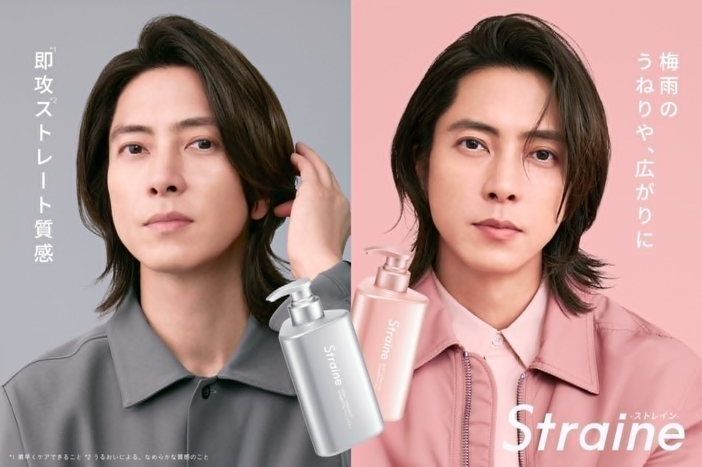
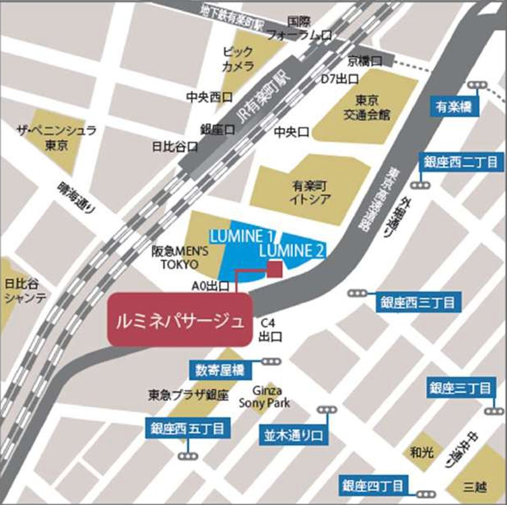
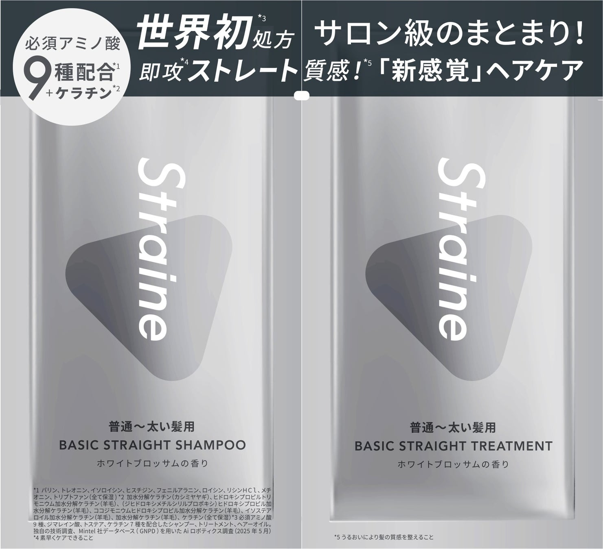
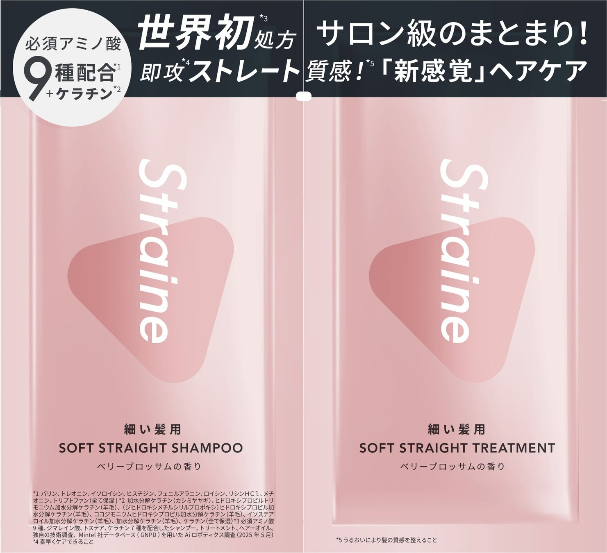
来源类型：日本品牌 / PR 发布
适合：美容个护 / 日化 OEM 客户
阶段：可进入供应链验证
核心卖点把“高温多湿导致的膨胀、毛躁、塌陷”单独做成换季换洗发水理由，抓的是日本 6-7 月极强的即时场景需求。
适合的客户美容个护 / 日化 OEM 客户
日本市场适配日本梅雨季和夏季湿热环境长期稳定，适合药妆、电商、Loft 类杂货渠道做季节性陈列和试用装转化。
供应链判断非常适合 OEM。重点不是复制成分，而是把“梅雨季专线”做成更强的视觉、香型、旅行装和试用套装组合。
可信度判断高。品牌活动时间、产品方向和官方站点均公开，属于已在日本品牌端落地的确定性信号。
公开可验证程度高。PR 发布页与品牌官网均可公开访问。
风险点洗护赛道竞争密集，如果没有气味、功效叙事、便携规格或高湿场景测试素材，很容易被归为普通顺滑洗护。
产品级下一步建议优先让工厂评估“高湿控毛躁”小系列：洗发、护发、发膜、1DAY 旅行装四件组，并同步打样潮湿场景测试对比图。
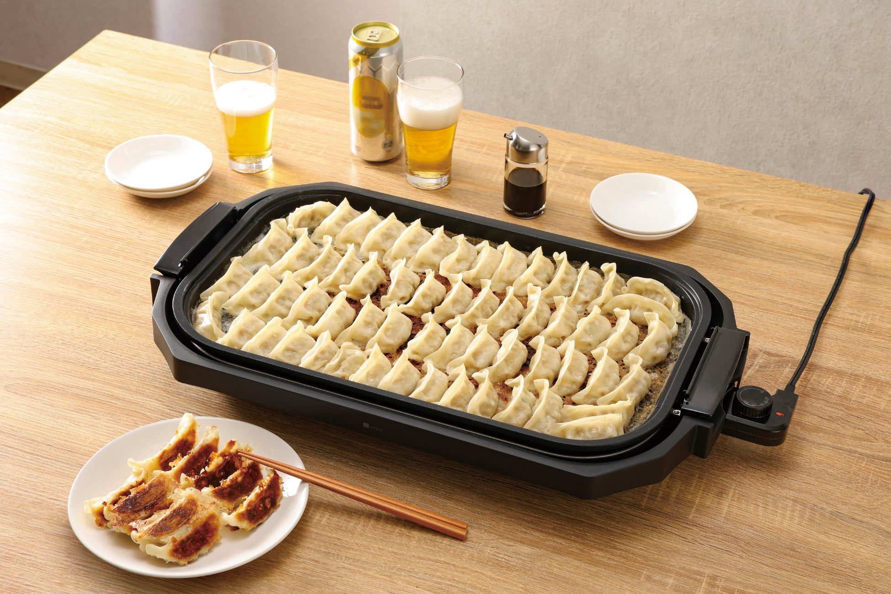
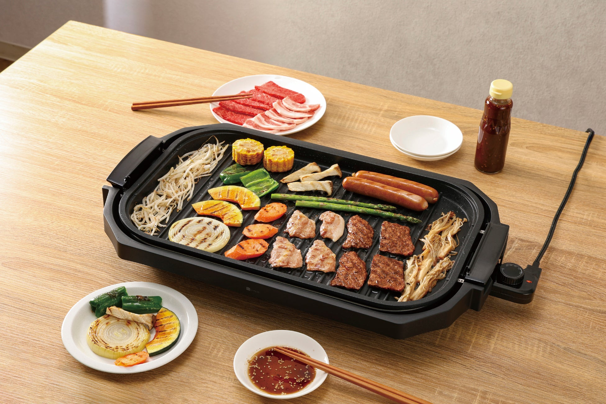
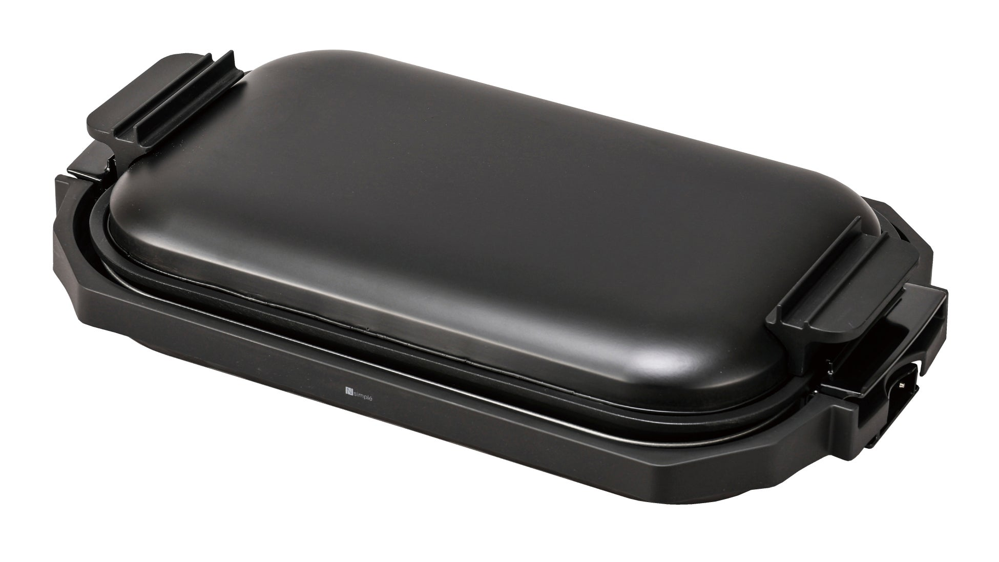
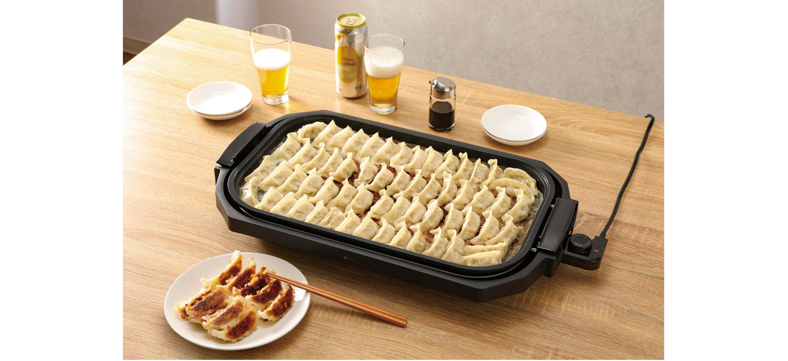
来源类型：日本零售品牌 / 日本电商
适合：厨房用品 / 家用小电器客户
阶段：值得联系工厂
核心卖点一次可做约 60 个饺子，双盘面覆盖家庭聚餐和派对场景，把“大容量热板”做成明确的家庭社交卖点。
适合的客户厨房用品 / 家用小电器客户
日本市场适配很适合日本家庭周末聚餐、儿童餐、露营前备餐等场景，也符合日本零售对“省时、可视、多人共享”的厨房叙事。
供应链判断适合找小家电厂做宽盘面、双温区、煎烤两用或饺子专用版本。也可以向锅盖、配件盘、收纳套装方向改良。
可信度判断高。Nitori 已公开上架，发布时间明确，属于已进入零售通路的成熟新品。
公开可验证程度高。PR 发布页与 Nitori 商品页均可公开访问。
风险点热板类赛道已经很成熟，如果只做放大尺寸而不做分区温控、清洁便利性或套装玩法，差异化不够。
产品级下一步建议优先验证三条改良路线：大饺子盘、煎烤火锅二合一盘、可折叠收纳方案；同时评估日本 PSE 和涂层耐用性。
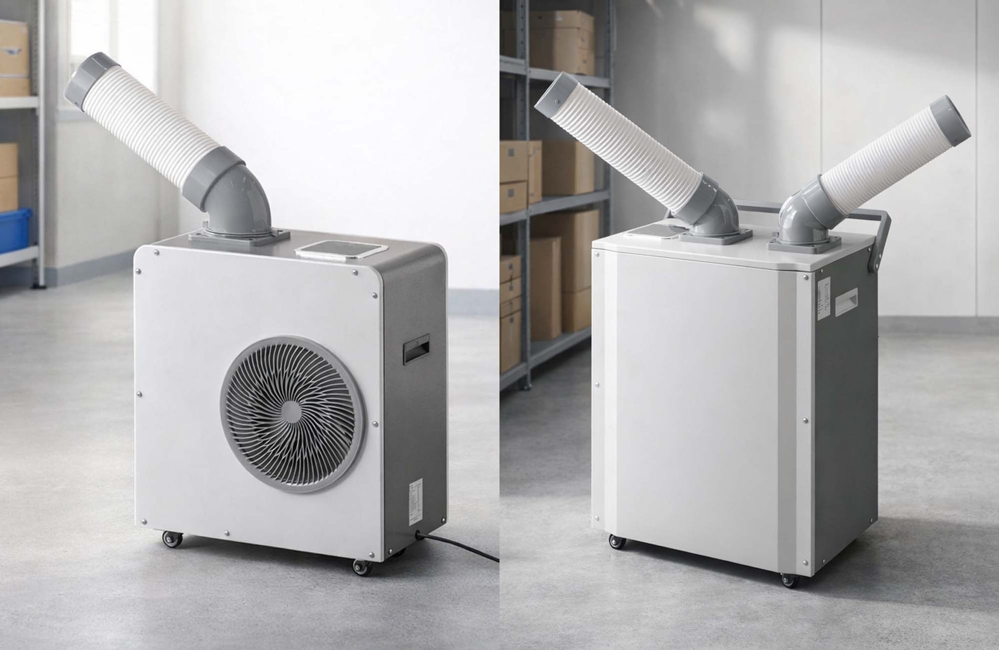
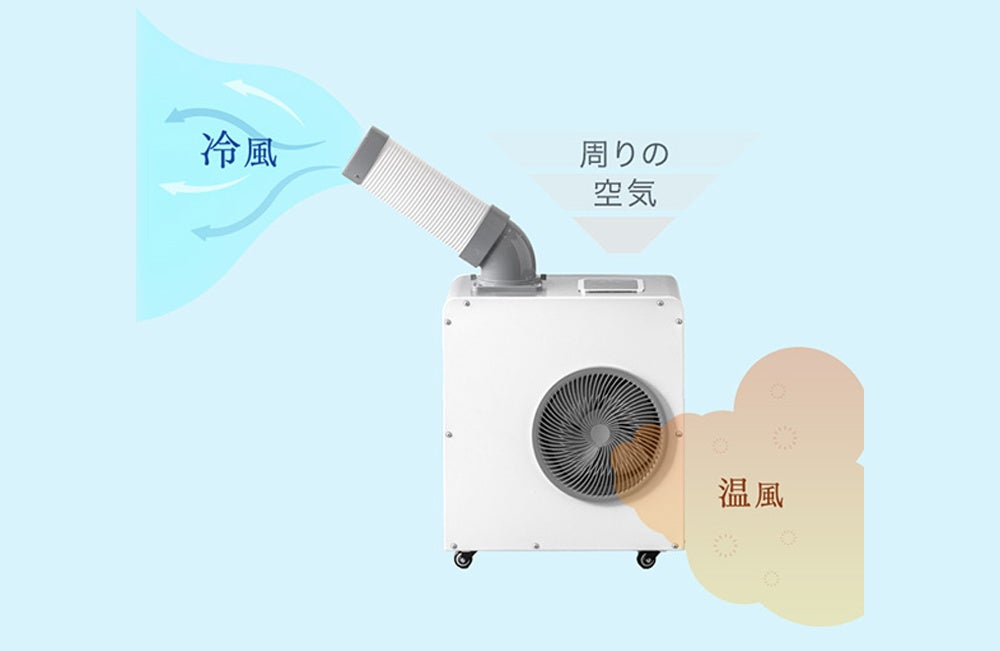
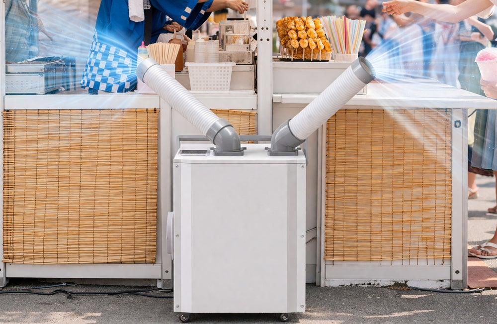
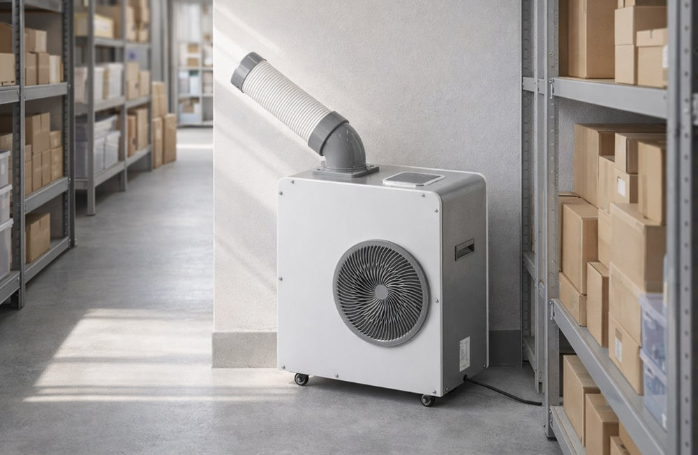
Tansu no Gen 工业级 Spot Cooler 双机型
高温降温
来源类型：日本零售品牌 / 日本电商
适合：家用小电器 / 户外园艺 / 劳保场景客户
阶段：值得联系工厂
核心卖点直接承接日本热中症对策需求，强调 45 摄氏度环境可用、局部定点送风，属于高温工作和仓储场景的刚需设备。
适合的客户家用小电器 / 户外园艺 / 劳保场景客户
日本市场适配日本 6-9 月高温作业需求很强，园艺、物流、工位降温、车库维修、户外作业都能接住。
供应链判断适合能力型小家电工厂或工业风机工厂切入。除了整机，也有风管、过滤、脚轮、机壳、降噪外罩等配件机会。
可信度判断高。品牌官方发布并同步导向自营站、Rakuten 与 Yahoo 购买链路。
公开可验证程度高。PR 页、自营站和电商店铺均公开可访问。
风险点整机类涉及压缩机、噪音、耗电、安全认证和售后维修，不适合普通白牌卖家直接跟款。
产品级下一步建议优先判断客户是做整机还是做周边。普通客户更适合从移动风管、导风罩、过滤件、降噪附件切入。
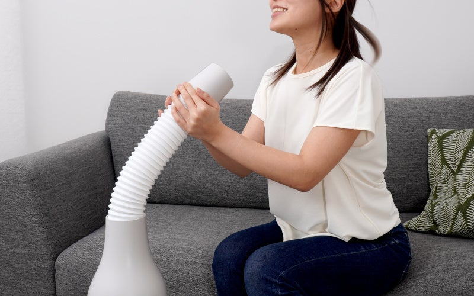
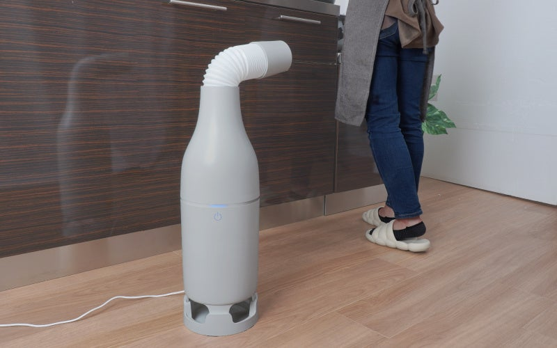
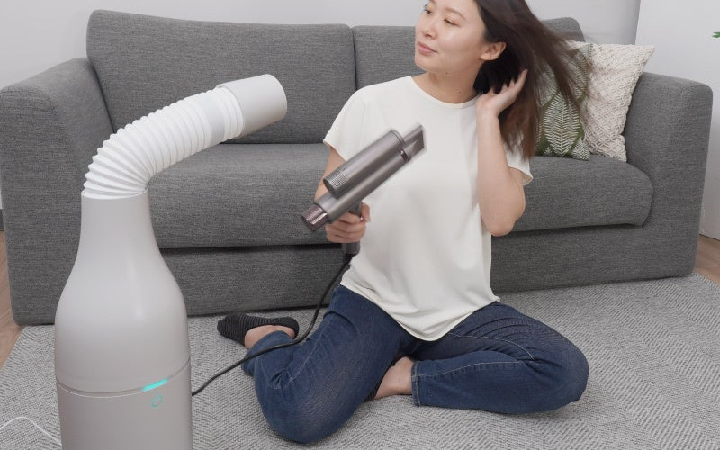
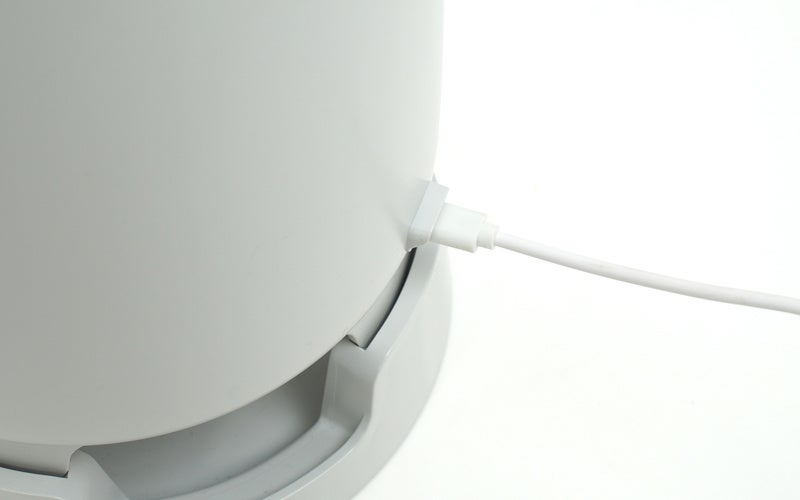
THANKO USB Spot Ice Fan 冰瓶冷风扇
桌面清凉
来源类型：日本创意家电 / 官方商城
适合：家用小电器 / 办公清凉用品客户
阶段：可进入供应链验证
核心卖点不需要排热管和安装工序，靠保冷瓶做更低门槛的局部冷风，击中办公室、书桌、租房桌面和临时工位场景。
适合的客户家用小电器 / 办公清凉用品客户
日本市场适配日本桌面个人清凉用品常年有销量，高温办公室、宿舍、直播桌面和厨房辅助位都容易形成即时购买。
供应链判断很适合做 OEM 轻改良。可从更静音、更好看、更大容量冷媒瓶、磁吸拆洗结构、USB-C 供电几条路线做差异。
可信度判断高。THANKO 官方商城在售，产品逻辑清楚，属于典型创意小电器商品化案例。
公开可验证程度高。官方商城与 PR 页面均可公开访问。
风险点若冷却体感不稳定，评价区会快速翻车；同时要注意冷凝水处理、噪音和实际降温幅度不能夸大。
产品级下一步建议先让工厂验证三点：冷媒瓶续航、风量噪音平衡、冷凝水控制。普通客户可优先做“桌面清凉礼盒版”。
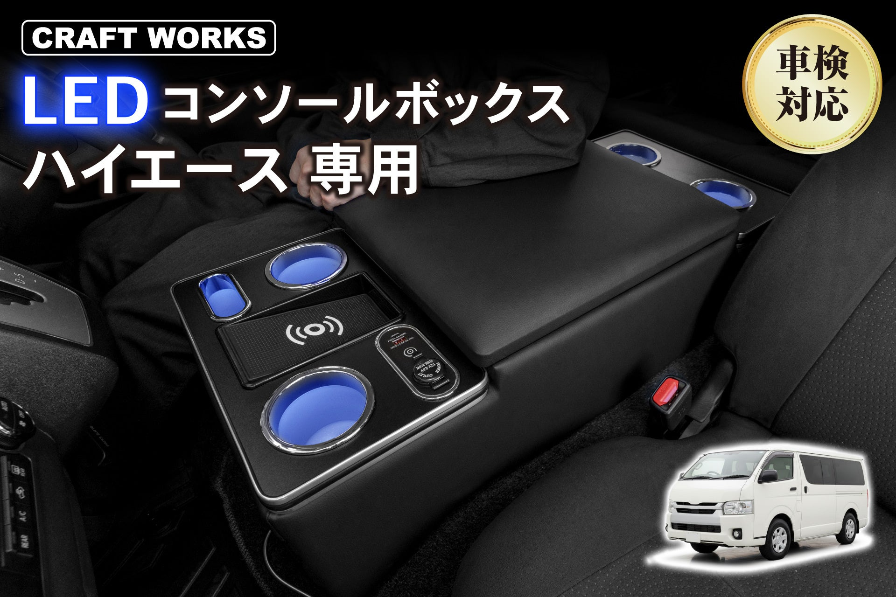
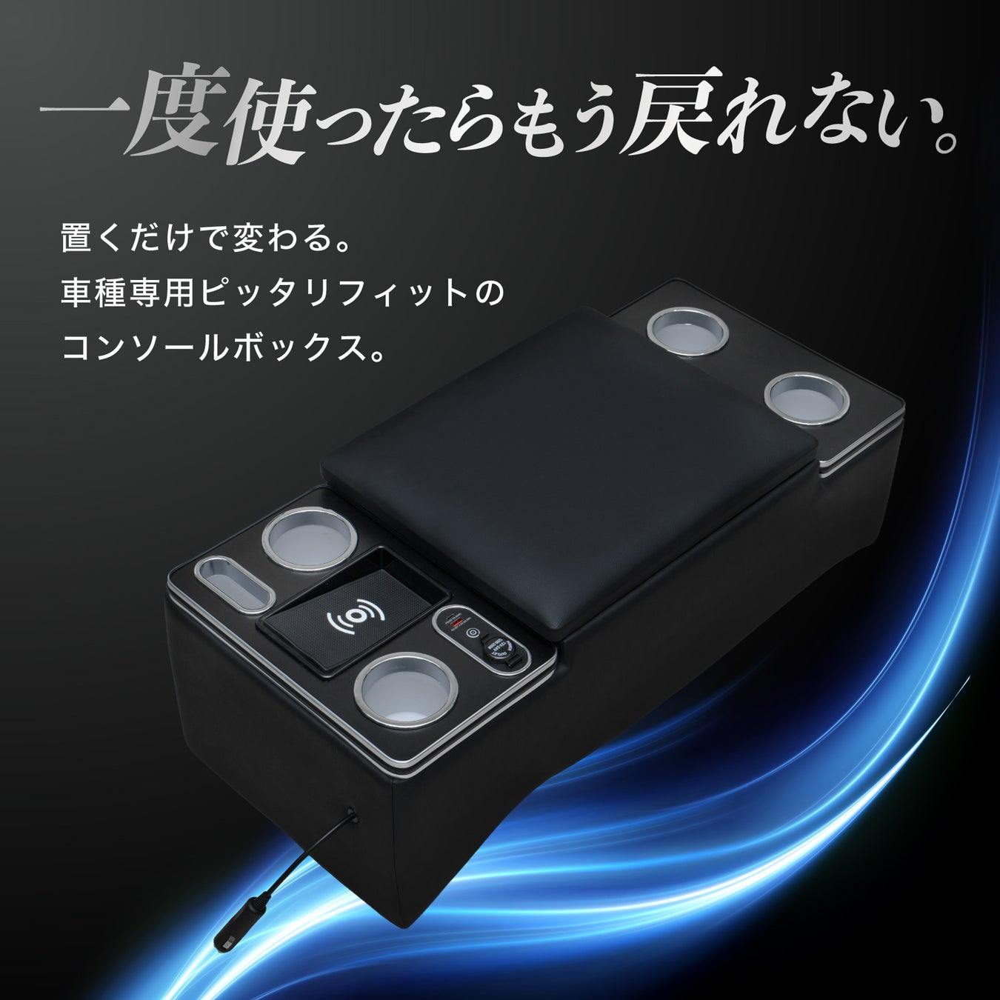
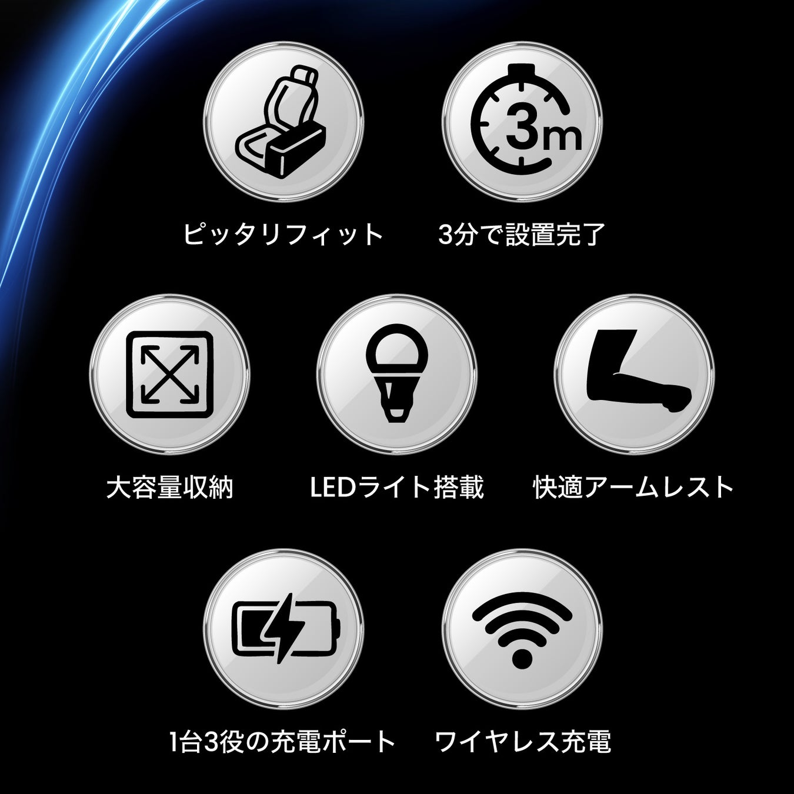
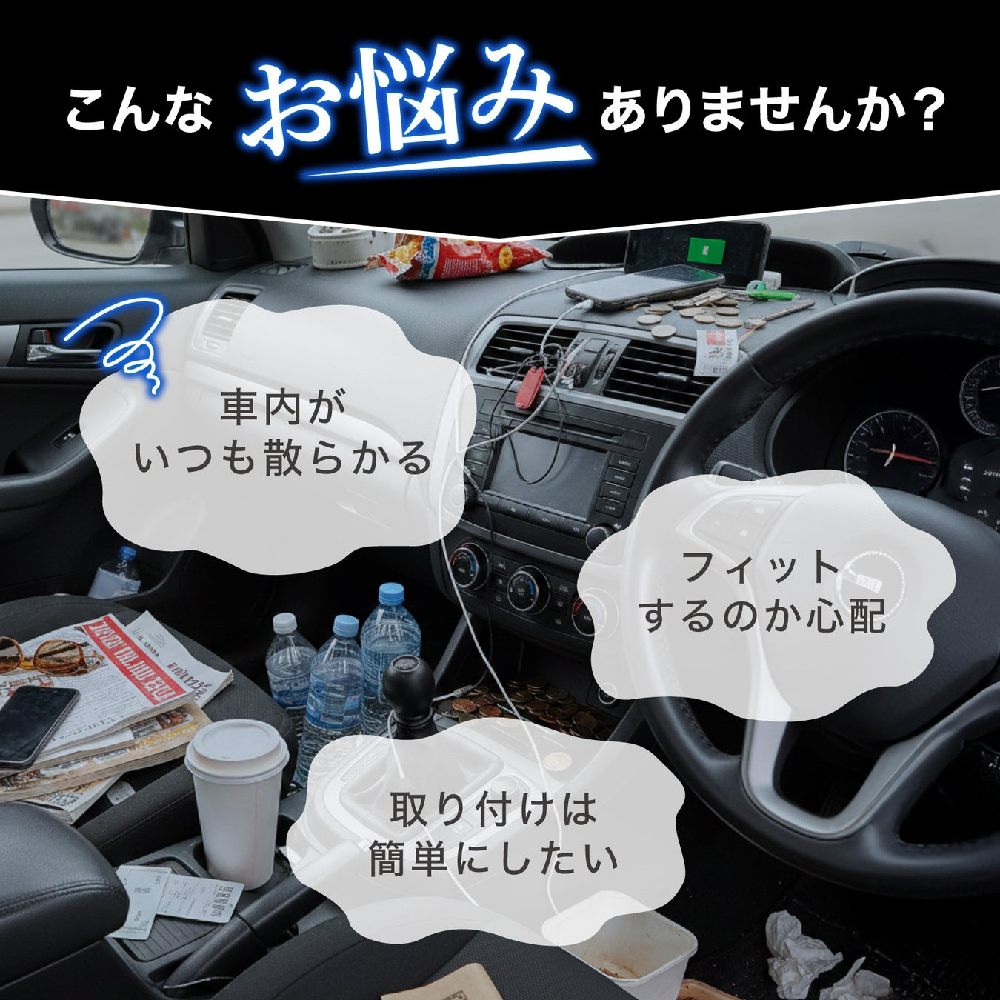
CRAFTWORKS Hiace LED Console Box 新版
车内升级
来源类型：日本电商 / 日本品牌 PR
适合：户外用品 / 车用品 / OEM 客户
阶段：值得联系工厂
核心卖点针对 Hiace 200 系用户把扶手、储物、LED 氛围和稳固固定一次做好，解决车内改装件“好看但不好用”的老问题。
适合的客户户外用品 / 车用品 / OEM 客户
日本市场适配日本 vanlife、车中泊、商用车升级和轻改装需求稳定，Hiace 又是极成熟的用户群体，卖点容易被理解。
供应链判断非常适合找车品和注塑工厂验证。可延展到不同车型、加装 USB、无线充、杯架分区或软包版本。
可信度判断高。品牌已同步导向 Amazon、Rakuten 和 Yahoo 三平台，说明产品已进入可卖状态。
公开可验证程度高。PR 发布页和多个公开销售渠道均可访问。
风险点车型专用件一旦尺寸误差或装配干涉处理不好，退货率会高；车内异响与材质气味也会影响评分。
产品级下一步建议优先让工厂评估车型开模和小批量改款能力，再决定走 Hiace 专车专用还是通用模组化路线。
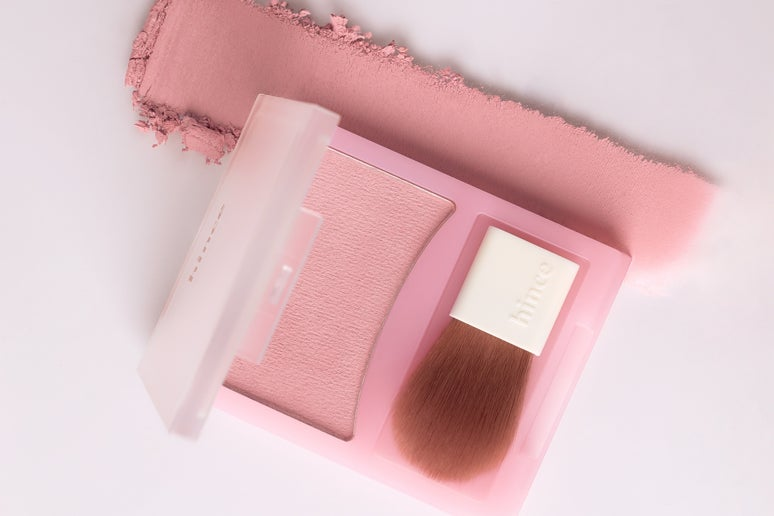
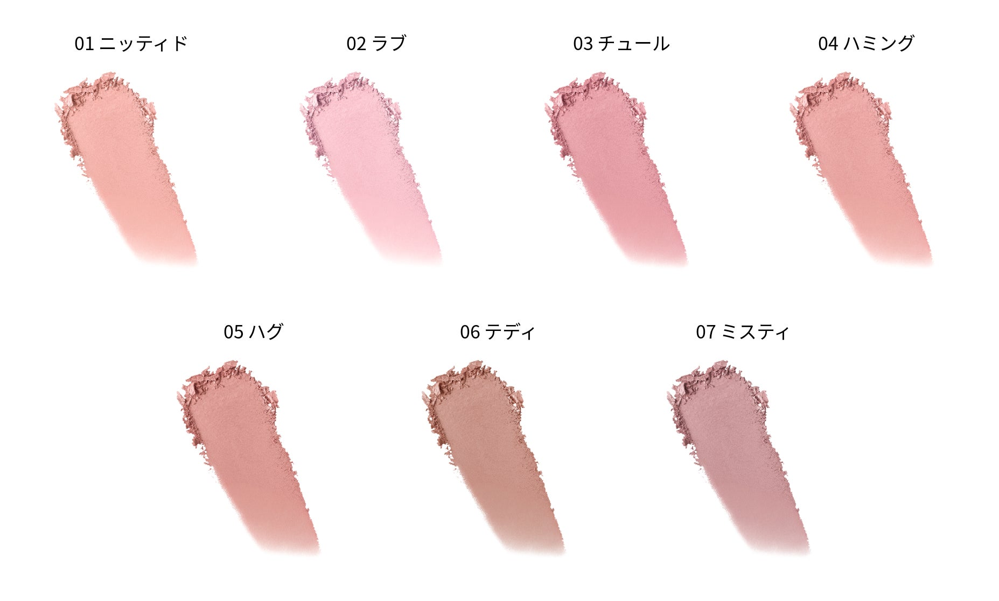
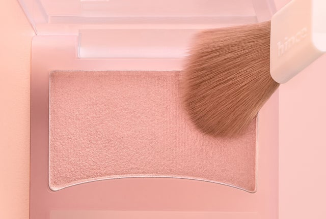
hince Hug Layer Cheek 叠层腮红
彩妆新色
来源类型：日本电商 / 韩妆品牌日本发售
适合：美容个护 / 彩妆 OEM 客户
阶段：可进入供应链验证
核心卖点强调“无需技巧也能叠出柔雾血色感”，本质是在包装、色彩命名和新手友好体验上做轻门槛高颜值产品。
适合的客户美容个护 / 彩妆 OEM 客户
日本市场适配日本 Qoo10、ZOZO、美妆集合店对韩妆新色和限定概念反应快，适合做轻上新、强视觉、社媒传播型产品。
供应链判断适合彩妆 OEM 研究粉体压盘、双色混盘、色号故事和外壳磁吸包装，不建议只跟色不跟体验。
可信度判断中高。日本销售链路明确，品牌日站和多个公开渠道都在承接，但更偏彩妆趋势型机会。
公开可验证程度高。PR 页面、日本站和官方店铺均可公开访问。
风险点彩妆新品节奏快，单靠一个新色名不够；压盘手感、显色、持妆和包装高级感决定复购。
产品级下一步建议建议先找彩妆工厂打样两条路线：双色渐层盘和带镜磁吸小盘，同时测试更适合日本市场的低饱和度命名体系。
来源链接